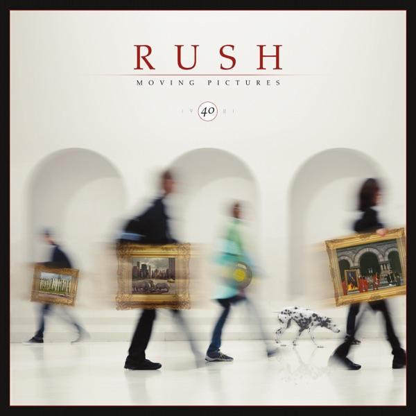

Moving Pictures
Rush
Upgrade idea: This 2022 40th Anniversary remaster is the current recommended edition. For the ultimate pressing, the original 1981 Canadian Mercury pressing is highly regarded by Rush collectors for its dynamic mastering. A half-speed or audiophile edition has not been issued.
- Original release
- 1981
- Pressing year
- 2022
- Country
- USA & Canada
- Format
- Vinyl LP, Album, Limited Edition, Reissue, Remastered (Red Opaque)
- Label / Cat#
- Mercury – B0033611-01 / Anthem (5) – B0033611-01 / UMe – B0033611-01
- Genres
- Rock
- Styles
- Hard Rock, Prog Rock
- Discogs release
- 22639850
- Discogs master
- 7532
- Apple Music
- Moving Pictures (Remastered)
- Wikipedia
- Moving Pictures
Production notes
Tracklist (Discogs)
| A1 | Tom Sawyer | 4:33 |
| A2 | Red Barchetta | 6:07 |
| A3 | YYZ | 4:23 |
| A4 | Limelight | 4:18 |
| B1 | The Camera Eye | 10:55 |
| B2 | Witch Hunt (Part III Of 'Fear') | 4:43 |
| B3 | Vital Signs | 4:45 |
Tracklist (Apple Music)
| 1 | Tom Sawyer | 4:36 |
| 2 | Red Barchetta | 6:10 |
| 3 | YYZ | 4:25 |
| 4 | Limelight | 4:19 |
| 5 | The Camera Eye | 10:58 |
| 6 | Witch Hunt (Part III of Fear) | 4:45 |
| 7 | Vital Signs | 4:46 |
Personnel & credits
- Rush — Arranged By
- Terry Brown — Arranged By
- Hugh Syme — Art Direction, Design [Graphics], Artwork By [Cover Concept]
- Geddy Lee — Bass Guitar, Synthesizer [Oberheim Polyphonic; Qb-x, Mini-moog; And Tauras Pedals], Vocals
- Neil Peart — Drums [Drum Kit], Timbales, Bass Drum [Gong], Bells [Orchestra], Glockenspiel, Wind Chimes, Bells [Bell Tree], Crotales, Cowbell, Percussion [Plywood]
- Alex Lifeson — Electric Guitar [Six And Twelve String], Acoustic Guitar [Six And Twelve String], Synthesizer [Taurus Pedals]
- Neil Peart — Lyrics By
- Pye Dubois — Lyrics By
- Alex Lifeson — Music By
- Geddy Lee — Music By
- Neil Peart — Music By
- Deborah Samuel — Photography By
- Rush — Producer
- Terry Brown — Producer
- Sean Magee — Remastered By [DMM]
Identifiers
- Barcode: 6 02435 87664 1 (Text)
- Barcode: 602435876641 (String)
- Matrix / Runout: LP1-SIDE A-B0033537-01-LP01A 222176E1/A (Side A)
- Matrix / Runout: LP1-SIDE B-B0033537-01-LP01B 222176E2/A (Side B)
Notes
Released with one page insert, lyrics printed on one side, credits and pictures on the other.
All lyrics © 1981 ole Core Music Publishing (SOCAN/SESAC) administered by ole.
Recorded and mixed at Le Studio, Morin Heights, Quebec, during October & November 1980.
℗2015 Mercury Records, a division of UMG Recordings, Inc. ©2015 Anthem Entertainment/Mercury Records, a division of UMG Recordings, Inc.
Not explicitly stated, but contains the same runout info as the other 40th anniversary releases
Notes & discrepancies
- Release year differs: your pressing=2022, Apple Music edition=1981. Apple Music typically streams the most recent remaster.
Rush’s 1981 masterpiece — ‘Tom Sawyer,’ ‘YYZ,’ ‘Limelight,’ seven tracks of progressive rock perfection. Neil Peart’s drumming is the benchmark. 2022 40th Anniversary remaster on Mercury/UMe (B0033611-01). Matrix B0033537-01 / 222176E1. A clean modern pressing of one of rock’s essential albums.